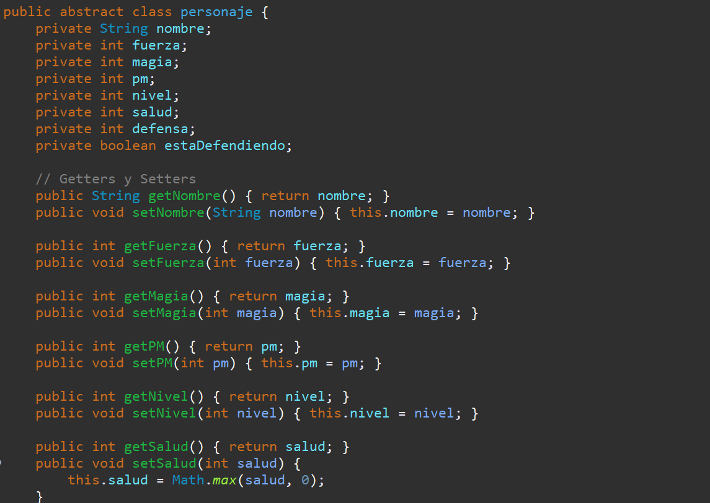
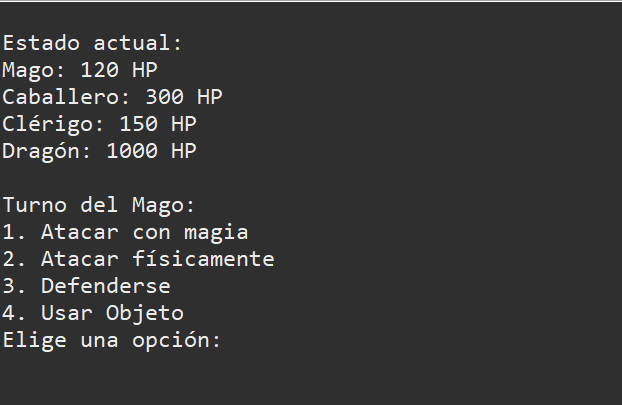

Descripción Detallada
"Duvan Quest" es un videojuego desarrollado en Java utilizando programación orientada a objetos. El juego es un simple RPG por turnos, en el que lastimosamente solamente hay un combate, el jugador se pone en el papel de los heroes, un mago, un caballero y un clerigo, los cuales debera controlar usando acciones como magias, ataques, usar objetos, etc. Para derrotar al malvado dragon Duvan que lleva aterrorizando a las personas desde hace años.
Tecnologías Utilizadas
- Java
- Programación Orientada a Objetos (POO)
Capturas del Proyecto

